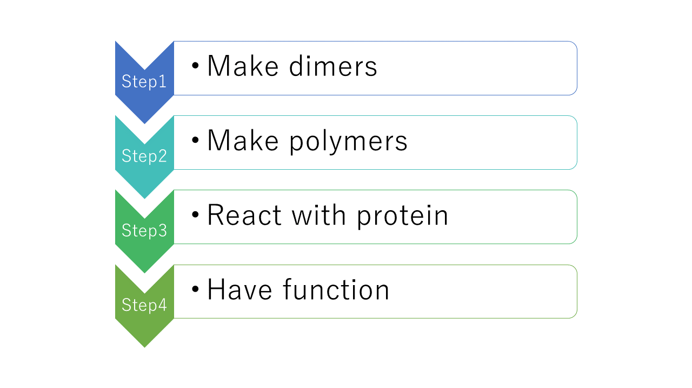
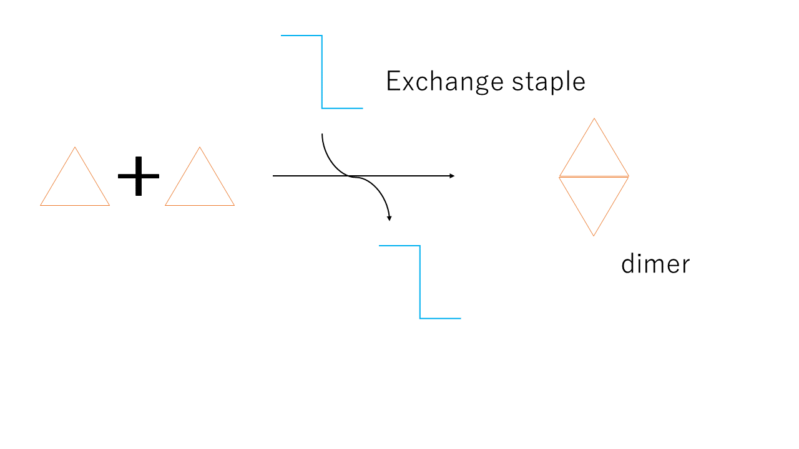
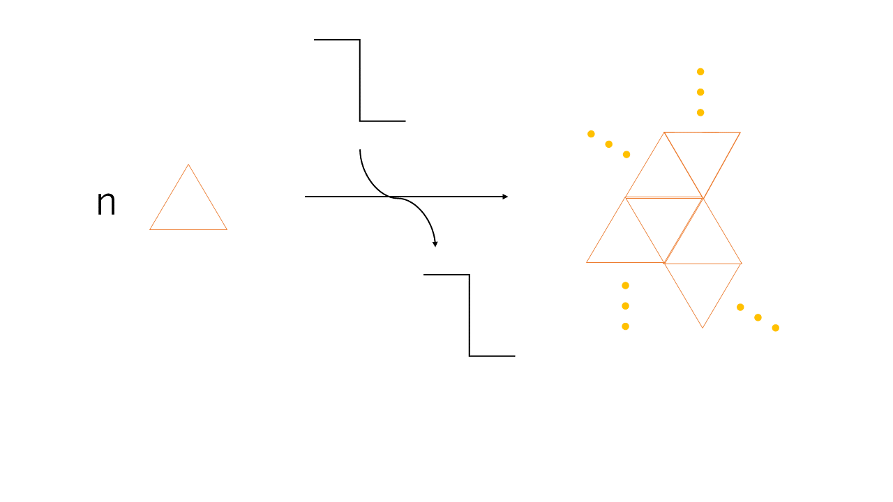
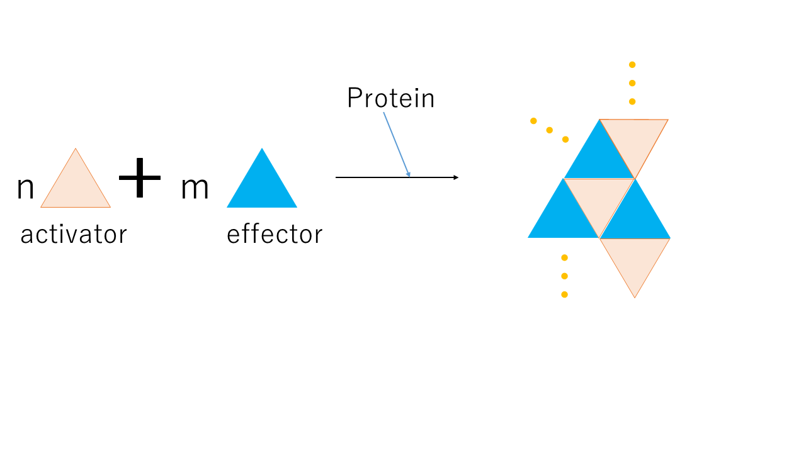
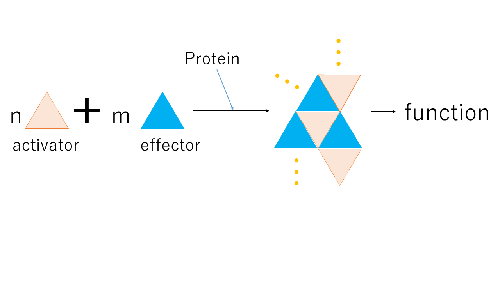

Strategy
The roadmap of our project
We have 4 steps to reach goals because our subthemes are gCan we construct triangles and dimers?h, gDoes triangles behave similarly when they construct polymers.h, gDoes triangles react with proteins and make polymers?h, gDoes polymers function?h, We show the details of each steps below.

Step1
Step1 is aiming at constructing triangles and dimers. We use staple exchange by which single triangles make dimers. Now, this is the basics of our plan.

Step2
Step2 is aiming at constructing polymers. The system is the same as step1, but we plan to know whether how triangles make polymers is the same as how it makes dimers or not, and how many triangles attach.

Step3
In step3, we divide triangles in two types, activator and effector. They make polymers together, but each has different role. Activators react to protein and make themselves possible to attach to effectors. Effectors attach to activators, but still have no function.

Step4
In step 4, effectors have a function. It is not still decided, but one example is that effectors make ligands for some receptors and transit signals to cells. (We discuss about the function of triangles in future section)
